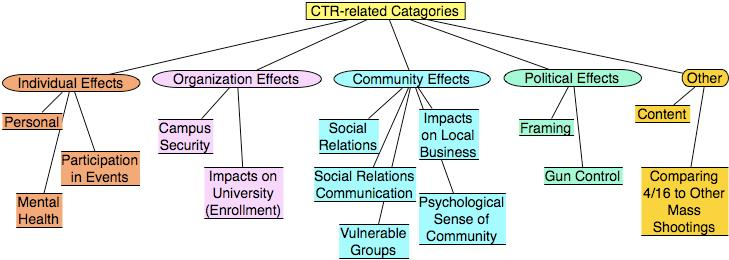

Networked Knowledge Organization Systems and ServicesThe 8th European Networked Knowledge Organization Systems (NKOS) WorkshopWorkshop at the 13th ECDL Conference, Corfu, GreeceThursday, October 1st 2009 |
Andy Priest, Janine Rigby Caroline Williams - Mimas The University of Manchester,
Ceri Binding, Douglas Tudhope - Faculty of Advanced Technology, University of Glamorgan
Building on work from the The Enhanced Tagging for Discovery (EnTag1) project the PERTAINS project aims to deliver service enhancements to the UK national aggregator services of research library OPACs (COPAC2) and Intute3 the database of web resources for higher education. Over 120,000 records of quality internet resources across all subject disciplines are described in the Intute database and over 34 million records from over 50 libraries make up the Copac database. Intute and Copac have grown out of library conventions and have traditionally taken a structured approach to categorising and classifying their content; through classification schemes and assigning keywords.
However, we are in the midst of a paradigm shift as a result of the growing proliferation of popular websites which offer users more informal tagging functionality to assist with collecting and describing personal collections. The report from the 2008 DPIE 14 project encourages exploration of personalisation technologies in the National Data Centre (NDC) services. Intute worked with EnTag project (and in particular Professor Douglas Tudhope) to test its tag recommender functionality in the context of Intute politics data. The PERTAINS project takes this a step further and is creating tag recommender demonstrators for Intute and Copac. Development is taking place in partnership with the University of Glamorgan, and the Intute and Copac teams at the NDC Mimas5, The University of Manchester. The demonstrators developed will be evaluated by groups of users (as encouraged by DPIE 26) and decisions made about their potential value in service implementation.
This paper will give and overview of the PERTAINS project (which is JISC funded), including technical discussion, sharing of the issues around enhancement to existing services, and project development in response to user requirements. Overall, this project explicitly aims to leverage network effects, respond to changing user expectations and more effectively exploit Intute’s and Copac’s UK presence as powerful aggregators of learning and research materials. We believe that the demonstrators developed could provide the foundations for a new tag recommender system and infrastructure for future development work in other services.
Objectives of PERTAINS:
This paper will present for the first time the PERTAINS project demonstrators. Throughout the summer and with a completion date of September 2009, the University of Glamorgan will be working on appropriate Web services for incorporation into the existing Intute and Copac interfaces to create the demonstrators. These services will include suggestions from both structured (controlled) vocabularies (held in the SKOS RDF standard representation) and unstructured sets of previous tags. The project team will have selected appropriate content and vocabularies and developed heuristics applying personalisation context to a prioritisation of possible suggestion sources.
In addition, the paper will share the findings of focus groups and user evaluation which led to the development of the demonstrators.
Janine Rigby, PERTAINS Project Manager
Mimas
The University of Manchester
Kilburn Building
Oxford Road
Manchester M13 9PL
Tel: 0161 275 7044
E-mail: janine.rigby@manchester.ac.uk
Azade Sanjari
The encyclopedia of Iranian architectural history was established with the goal of increasing the accessibility of the widespread resources and documents related to Iranian architectural history and to provide a better and more productive space for collaboration of researchers and scholars, enabling them to expand and improve this encyclopedia.
EIAH's model of knowledge is based on two concepts: Entry and Document. An entry is a concept in the field of Iranian architecture which information can accumulate around it and Document is any kind of resource that is available for any of the entries and relate to them. The information architecture which started to get implemented is aimed to achieve three goals. First, increase the accessibility of the documents related to topics(concepts or entries). Second, the relation between concepts and third the relation between concepts and documents.
EIAH's model of knowledge is based on two concepts: Entry and Document. An entry is a concept in the field of Iranian architecture which information can accumulate around it and Document is any kind of resource that is available for any of the entries and relate to them. The information architecture which started to get implemented is aimed to achieve three goals. First, increase the accessibility of the documents related to topics(concepts or entries). Second, the relation between concepts and third the relation between concepts and documents.
The infrastructure that can achieve the mentioned goals is a three layer architecture (EIAH cake). The underlying layer is a pool of information which is an integration of distributed digital repositories in our case. The top level is the knowledge representation level, an ontology of Iranian architectural history, a conceptual model designed for this specific area of study and the last layer which sits in the heart of this architecture is the mediator level which is responsible for establishing the relation between concepts and documents and enhancing search and semantic interoperability.
Since the initial data must be gathered from various sources, EIAH decided to use distributed digital repositories. That means any cultural/scholar center can store their documents in a digital repository with the standards EIAH has provided. These standards ranges from hardware and security to metadata, description and preservation. The metadata model is customized based on Dublin Core with refinements and it is capable of describing any resource in this field. An application profile has also been developed based on Singapore framework for DCAP which is simple to use for end users (archivers) and capable of harvesting and working with ontology. In order to ensure the accuracy of archived resources in repositories, guidelines and style-sheets are prepared for entering high quality metadata.
All documents in distributed repositories must get their metadata according to this model and the big leap happens when a detector agent (the mediator level) harvest metadata to interpret them by the ontology (the top layer). The results of this process will be presented in a semantic portal or might be used for complex search queries by end users. When this happens on a federation of distributed digital repositories, the ocean of separated documents become much meaningful and interpretable by human scholars. This architecture is a dynamic Topic Map model which links the topics (entries in our case) to their occurrences (documents in our case) across networked repositories and integrate them into an encyclopedia which its final product is not just well-written articles about specific topics but a meaningful collection of all available related resources to those topics.
Timo Borst & Joachim Neubert
German National Library of Economics (ZBW) – Leibniz Information Centre for Economics
After having published the STW Thesaurus for Economics as Linked Data (http://zbw.eu/stw), the ZBW German National Library of Economics wants to make use of it in library applications. Frequently, these applications are not thesaurus-driven (let alone Semantic Web enabled), so thesaurus support has to be added in an unobtrusive way “from the outside”. For this purpose we provide access to the thesaurus concepts and relations in a web service (http://zbw.eu/beta/stw-ws). The web service works on the SKOS-representation of the STW, offering a simple, REST-oriented API for resources like “concepts”, “narrower” or “synonyms”. It can be applied to enhance and facilitate both retrieval and indexing in library applications (prototypically implemented in a repository application).
In the field of retrieval the thesaurus web service can
STW with its 5,800 bilingual concepts, 17,000 synonyms and 25,000 relations is well suited for this.
For a large-scale advance simulation of the effects of query enrichment facing “real life” queries (and for the evaluation of the actual thesaurus coverage) we analyzed more than a million “simple” search queries mined from the logs of a representative bibliographic database in economics (http://econis.eu). As we found out, half of the (already normalized) queries only occurred once in two years (only less than 1% showed up 10 or more times). In the case of queries with multiple occurrences we looked up the thesaurus and found less than 15 % direct matches. The main reason for this rather low rate was that users often combine multiple concepts within one query. We therefore will present different approaches to deal with this, especially a) syntactical splitting of search strings (which increases the hit rate to more than 40%), and b) an application of full-text matching techniques to the lookup itself. For the identified thesaurus concepts the synonyms, broader, narrower and related terms are evaluated statistically.
In the field of indexing, the thesaurus web service can assist users with indexing or “tagging”. In our DSpace repository for scientific articles in economics, indexing is prospectively done by authorized end users submitting and uploading their articles. These users, e.g. scientific staff from an economics faculty, generally have no experience in applying controlled vocabularies. To support them and to foster the submission of electronic resources we will offer an autosuggest service for thesaurus terms very similar to the one already in use on the STW web site (http://zbw.eu/stw). Finally, we will extend this service to another well-known terminology, the “Journal of Economic Literature” (JEL) classification.
The web service builds on Semantic Web technology. A thin PHP wrapper translates the resource requests to SPARQL queries. A Joseki server operating directly on a memory model of the RDF/XML file and alternatively a SPARQLite server with a Jena TDB triple store and LARQ (Lucene free text indexing for SPARQL) are used to execute the queries.
Carmen Reverté Reverté. Aquatic Ecosystems. IRTA. E-mail: carme.reverte@irta.cat
Dra. Montserrat Sebastià Salat. University of Barcelona. E-mail: msebastia@ub.edu
The present work is part of a European Subject Gateway project in the aquatic sciences domain. Previous studies fulfilled in this research show that each aquatic science information system use different knowledge organization systems (KOS) to describe their subject content (thesaurus, subject headings, classification schemes, keyword lists and metadata) and to retrieve the information.
The main objective of this research is to solve the information integration in the aquatic sciences domain with a KOS system that integrates different thesauruses and taxonomies. It will focus in two methodologies. On one hand, develop mapping methods for aligning ontologies through automatic processes. In this stage the aquatic sciences thesaurus will be converted to data schemes, mainly SKOS-Core language with RDF or XML format, and will be mapped to find the equivalence relationships among languages, the thematic depth, accuracy and consistency.
On the other hand, main findings show us that aquatic science field it isn’t enough represented in the controlled vocabularies. The main reason is because we are in front of multilingual and multidisciplinary collections (marine science, oceanography, limnology, ecology, environmental science, etc.). Consequently, the other methodology studied is build a new multilingual thesaurus on aquatic sciences, in which the establishment of cross-concordances among controlled vocabularies and terminologies will be the basic element to solve the heterogenic semantic problem.
Koraljka Golub, Vanda Broughton, George Buchanan, Emlyn Everitt, Marianne Lykke Nielsen, Dagobert Soergel, Douglas Tudhope
EASTER is an 18-month JISC project funded under the Information Environment Programme 2009-11. It started in April this year and involves eight institutional partners.
The purpose of the project is to test and evaluate existing tools for automated subject metadata generation in order to better understand what is possible and what the limitations of current solutions are, and to make subsequent recommendations for services employing subject metadata in the JISC community. The information centre chosen as a test-bed for this project is Intute.
Selected tools for automated subject metadata generation will be tested in two contexts: by Intute cataloguers in the cataloguing workflow; and by end-users of Intute who search for information in Intute as part of their research, learning, and information management.
The methodology includes creating ‘gold standard’ test collection by careful manual cataloguing and then using this test collection to evaluate several tools with respect to the subject terms – both controlled vocabulary descriptors and free terms – they assign. The best tool(s) will then be integrated into the cataloguing workflow to evaluate their effect on the quality and speed of cataloguing. Furthermore, we will conduct a task-based end-user retrieval study to determine the contribution of automatically assigned terms and manually assigned terms.
Philipp Mayr, Philipp Schaer & York Sure
In the final phase of the project KoMoHe1 at GESIS, a major evaluation effort to test and measure the effectiveness of the vocabulary mappings in a Knowledge Organization System (KOS) enhanced environment was conducted (Mayr & Petras, 2008). The paper reports on the evaluation results of different intra- and interdisciplinary cross-concordances.
The most important question is how effective and helpful the mappings are in an actual search. In a search portal like sowiport.de2 which provides unified access to a variety of databases providing high quality content such as bibliographic metadata, full texts and data sets, the question becomes crucial whether cross-concordances can enable a distributed search with improved result sets. Can they bridge the differences in human language in order to facilitate a seamless search with the same query across different disciplinary databases? Our thorough Information Retrieval (IR) evaluation focuses on the quality of the associated search via cross-concordances.
Leveraging the cross-concordances should expand the search space, correct ambiguities and imprecision in the query formulation and therefore, in general, find more relevant documents for a given query. The retrieval results improve for all cross-concordances, however, interdisciplinary cross-concordances cause a significantly higher (positive) impact on the search results. For all cross-concordances in the test scenarios, more relevant documents were found compared to the query types without the use of cross-concordances; in particular cases, the retrieved set was even more precise (e.g. increase in precision as well).
In this paper we want to explore pros and cons of intra- and interdisciplinary cross-concordances3: Why are cross-concordances in one discipline (e.g. KOS in social sciences) less effective for IR than interdisciplinary mappings (e.g. social science KOS mapped to a psychology KOS)? Where and how can automatic mapping methods help in KOS mapping projects (Lauser et al., 2008)?
Rob Tice
The ASPECT Vocabulary Bank for Education (VBE) is a repository in which multilingual terms, vocabularies and thesauri can be published and disseminated. The VBE is designed to support a range of exchange formats and retains and exposes all historical information about the terminology.
The VBE is part of the ASPECT project and is being developed and improved over the 30 month duration of the project. As such it represents ongoing work.
Terms (curriculum items) shall exist at more than one place in a structure or vocabulary.
Terms (curriculum items) shall be reused in multiple vocabularies.
When mapping between different terminology sets and managing change between revisions it must be possible to identify relationships to and changes which result in a non-preferred term being created.
Multilingualism can be considered as two separate requirements. There is a need to indicate linguistic equivalence between different terms as well as the requirement to provide multilingual ‘labels’ for metadata properties of either terms or vocabularies. The VBE supports both approaches.
The VBE supports a ‘freely-faceted’ approach allowing different contributors to describe facets of their terminology in different ways (even if these are later consolidated).
It is essential that there is a simple, controlled mechanism for adding local extensions to the format of terms and relationships without breaking basic interoperability. Metadata considerations aside, it is a fundamental requirement that the internal model of the terminology structure shall be format-independent.
The choice of input and output formats is driven by a need to be representative of domain usage. As the project progresses the supported formats should be able to develop in response to new standards, domain uptake and vocabulary availability. Current formats:
Within the data model for the service, vocabularies can be loosely coupled to schemas which describe the metadata about a term or a vocabulary (e.g. identifier, term name, authority etc). This allows validation to be performed after ingestion against whichever schema is subsequently used to define to element templates.
A variety of machine interfaces are available for interrogation and searching of the terminology bank.
The presentation will consist of two distinct parts:
This will expand on the technical specification outlined above. It will outline the issues encountered in implementation of the VBE. This will include architectural considerations such as how the VBE fits with other components of the APSECT project, including registries and repositories, within the framework of a Service Oriented Architecture (SOA). It will also cover specific issues raised by different vocabularies and formats. Finally, this part of the presentation will outline the future development path of the VBE within the ASPECT project.
The second part of the presentation will consist of a live demonstration of the VBE including the end user interface (search, browse, download, etc.), administrator functions and machine interfaces.
Philipp Schaer & York Sure
A general problem with searching via keyword matching is the so called „vocabulary problem“ (Furnas et al., 1987): The same idea or search query can be expressed in a variety of ways. Using current web search engines by typing in the right term typically leads to a list of documents where the “right one” is also included. However, even if you are using a “wrong” term there is a high probability of getting a non-empty result set – simply saying that you will find documents that contain the wrong term. Now let’s have a look at todays Digital Library (DL) systems or specific databases where controlled vocabularies, usually a Thesaurus, is used for classifying publications. They often contain the metadata of publications but lack the full texts or even an abstract. In this situation the vocabulary problem can become quite serious. If the search doesn’t use one of the controlled terms the document was indexed with the chance of getting relevant documents is very low, there is a higher chance than in the Web of getting an empty result set. For many users this leads to a search strategy to reflect the unnatural nature of keyword querying. In Aula et al. (2005) one expert articulated: “I choose search terms based not specifically on the information I want, but rather on how I could imagine someone wording […] that information.”
Petras (2006) presented a method to overcome the vocabulary problem called search term recommendation. She used specialized search term recommender (STR), which were trained to map free terms from the users mind to one or more specialized controlled vocabularies (e.g. thesauri or subject headings) using a statistical method (Gey 2001). We implemented such a STR by using a probabilistic latent semantic analysis (pLSA) and support vector machine (SVM) based classification tool.
Modern information-seeking support systems (ISSS) try to make use of automated transformations and expansion of textual queries by using e.g. stopword lists or stemming (Hearst 2009, Petras et al. 2007) but there is often a need for query specification via entry form interfaces. A dynamic query term suggestion is implemented in many modern web search engines but these systems only try to make suggestions based on prefix matches (user types “canc” and the system suggests “cancer”, “cancel” and so on).
White and Marchionini (2007) performed a study on a similar interactive method which they called “real time query expansion”. After the user types a word and presses the space bar, the system presents terms based on the surrogates of the ten top-ranked documents. Using a very different data foundation for their suggestions this supporting method might be adaptable for the STR. So far, it lacks an evaluated user interface.
A pretest using 125 CLEF topic sets (2003 and 2007) showed, that the training corpus (taken from the social science literature database SOLIS (GESIS 2009) of 370.000 documents (title, abstract and intellectually indexed via a thesaurus) is too large and too scattered to present contextually mapped terms for one-to-one mappings: the pretest showed that looking up only one single free term presents to many controlled terms which leads to an ineffective support for the searcher. This was due to a missing context (e.g. “politics” can be in the context of “foreign affairs“, „disenchantment with politics“ etc.) the free terms can belong to. By adding only 1-2 additional terms, which describe the context in which the original term was meant, the STR returned effective term mappings. Even if Jansen et al. (2007) showed that a normal web searcher uses 2.8 terms per query there still is a need for adding more contextual information to a STR by using an intelligent user interface for this ISSS.
For the NKOS workshop, we plan to present an overview of the implemented STR and the general techniques to build and design query expansion tools for web search engines and DLs. We will focus on state-of-the-art solutions in interactive query expansion and will show a prototype for such an interactive search term recommendation tool.
This work was done in the Value-Added Services for Information Retrieval (IRM) project funded by Deutsche Forschungsgemeinschaft (DFG - INST 658/6-1).
Aida Slavic - UDC Consortium, Antoine Isaac - Vrije University Amsterdam
The design and subsequent management of bibliographic classification schemes has to balance two requirements that are not easy to reconcile:
In addition, the classification scheme, being a pre-coordinated KOS, presents a separate set of problems with respect to differences in classification terms as originally published in the scheme by its owners vs. those developed in the process of classification use (subject metadata).
Recent developments in KOS standards, from BS 8723 and SKOS to the new FRSAR model, open new possibilities for exploiting subject data but they also make us aware of various management and usage issues. The SKOS standard, in particular, features the publishing and unrestricted sharing of vocabulary data among its goals. One of the key issues in KOS sharing is the management of persistent identifiers, e.g. HTTP URIs, for concepts. Experience gained from managing older and well-established classification schemes shows that this issue is far from trivial.
The owners and users of universal classification schemes whose world-wide applications have been used for over a hundred years, such as Dewey Decimal Classification, Universal Decimal Classification, and Library of Congress Classification, have been grappling with the issue of class identification for a long time. The automation of these systems in 1980s and 1990s helped owners and publishers manage vocabulary changes but policies and implemented solutions differ from scheme to scheme and are tied to proprietary editorial systems and databases. Porting KOS into an open web of linked data, as SKOS targets it, requires the issue of class/concept identification to be addressed further in the public domain.
Using examples from the Universal Decimal Classification and drawing parallels with other classification schemes, the authors will outline and illustrate aspects of vocabulary change that have a major impact on vocabulary sharing and class URI management.
The following specific issues will be discussed and illustrated with examples:
With respect to scheme revision and cancellations, the authors will also illustrate some problems in re-use of once cancelled notations to represent new concepts over the period of 5-50 years and why in enduring classification systems this problem cannot be avoided and should be anticipated. With respect to the identification, representation and publishing of pre-combined concepts, this issue will certainly need more attention in SKOS as the standard starts to be widely and simultaneously used by both scheme publishers/owners and scheme users.
The problems discussed here are common to all classification schemes and although the editors and designers of traditional schemes may be more aware of them, the examples and illustrations shown here will be of concern to authors and designers of new KOSs as well.
Stella G Dextre Clarke - Project Leader, ISO NP 25964
In 2007 the final part of BS 8723 was published, completing the following family of standards:
BS 8723: Structured vocabularies for information retrieval – Guide
Even before the ink on Part 5 was dry, work began on adopting and adapting the British Standard to become ISO 25964.
ISO 25964 will revise and supersede both ISO 2788 and ISO 5964. While based on BS 8723, it will rearrange the content as follows:
ISO 25964: Thesauri and interoperability with other vocabularies
A draft of Part 1 is now in the final editorial stages and scheduled for issue later in 2009. Work has begun on Part 2.
Differences from BS 8723:
In summary, quite soon we shall have an international standard for thesauri that is fit for the digital, networking era.
Edward Fox, Uma Murthy, Naren Ramakrishnan, Andrea Kavanaugh, Steve Sheetz, Donald Shoemaker, Venkataraghavan Srinivasan Virginia Tech
Crises and tragedies are, regrettably, part of life. While always difficult, recovery from tragic events may be increasingly facilitated and supported by technology. Yet, advanced intelligent information integration methods have not been applied to this domain, which we refer to as Crisis, Tragedy and Recovery (CTR). The impact of tragic events is felt over extended periods, requiring longitudinal studies of complex inter-dependencies. Consequently, with the Internet Archive and other partners, we will build CTRnet, an integrated distributed digital library network providing a comprehensive suite of CTR-related services.
A key task is development of a CTR ontology, for integrating information across tragic events. The ontology will aid information organization, exploration, visualization, and analysis (including temporal modeling of events as they unfold). We will employ ontologies for browsing and semantic query expansion. Ontology-based tagging will leverage the involvement of the community, and attach shared meanings to the elements of the digital library.
A comprehensive ontology will be connected into a knowledge base that relates to events, studies, findings, and results / lessons learned / best practices. It would include: variables to measure, activities and behaviors to monitor, effects to test, and connections with the theories and knowledge of a variety of social and behavioral science disciplines.
We will seed the ontology building process with data gathered from initial focus group analyses, as well as knowledge gained from literature in this domain and from Crisis Informatics. The User interactions and log data gathered from the CTR website and Facebook application will aid further refinement.
In a brief pilot exploration, we extracted top phrases from the abstracts and keywords from papers in the 2005 and 2007 ISCRAM1 proceedings using the N-Gram Statistics Package2:
| Selected distinctive word pairs identified from ISCRAM proceedings | |||
| emergency response | Decision support | information systems | teams participants |
| decision making | data models | disaster monitoring | teams maps |
| command teams | disaster plan | Crisis management | sms text-message |
| flood alerts | information seeking | situational awareness | disaster registry |
| physical communication | human disaster | teams access | decision preference |
We conducted focus group interviews following the April 16, 2007 tragedy at Virginia Tech. We employed the Group Cognitive Mapping System to generate ideas, issues, concepts, and important research questions that are relevant to the events of April 16th, resulting in the following categories:
We will evaluate the ontology in several ways. One connects with our information retrieval and digital library research; we will measure the breadth and specificity of the coverage of our content by the concepts in the ontology. Second, through focus groups and user studies we will measure the coherence, consistency, and other indicators of ontology quality. A third form of evaluation concerns the ease with which new CTR instances can be folded into the ontology.
At the NKOS workshop, we will solicit expert views, ideas, and suggestions for an optimal strategy for development and evaluation of a CTR ontology. We will learn about other related projects, useful software, and possible collaborations. Of particular relevance is our goal to work toward a global CTR ontology that is applicable in diverse cultures and in many languages.
Claudio Gnoli & Aida Slavic
The Universal Decimal Classification (UDC) is a KOS used by libraries and other institutions in many countries across the world. Created in early 20th century by Paul Otlet and Henri Lafontaine, it has been subsequently developed in many ways, and is currently maintained by an international consortium. The way UDC is designed makes it especially suitable for indexing and retrieval in the digital environment, as each concept is usually expressed by a fixed notation that can be combined with others to build compound subjects. One way to do it is by a relationship between two concepts taken from different main classes, that is expressed by a colon between their numbers.
Recent developments of UDC are focused on the revision of main classes according to the principles of facet analysis. A study has started in 2009 aimed at producing a faceted revision proposal of class 1 "Philosophy". To this purpose, an Italian working group is discussing the requirements of an updated classification of philosophy. Some facets specific of philosophy are identified, like branches, periods, viewpoints, methods, etc.
One question raised by the working group concerns the coding of special philosophies, like "philosophy of law" or "philosophy of science". In UDC these are currently expressed by colon relationships, like 5:1 "science in relation to philosophy". However it has been noticed that this is different from "philosophy of science", as the colon relationship itself does not express the kind and direction of the link between the two concepts. Instead such function can be performed by facets, which express the typical specifications of a class by several aspects.
Foci in a facet can be defined either within the class itself, like in "philosophy, from viewpoint: dualism"; or in some other main class, like in "philosophy, about topic: science". Here the notion of science is not taken from inside the schedule of philosophy, but from another main class. Such extra-defined foci [Gnoli 2006] should be distinguished from colon relationships. At the same time, the notation 5 for "science" should be kept distinct from that for the viewpoint facet 1-7, so to make the concept of "science" retrievable by automatic searches independently from the context in which it occurs.
Notational solutions are discussed, aiming at (1) allow for automatic parsing of concepts, (2) identify appropriate nesting of phases and facets, (3) keep the complexity of notation within an acceptable limit. Although the last purpose conflicts with the other two [Austin 1979], solutions are studied to maximize the effectiveness of indexing and retrieval. These can suggest more general considerations concerning facet and phase relationships in KOSs, and their management in future UDC development and applications.